Seoul
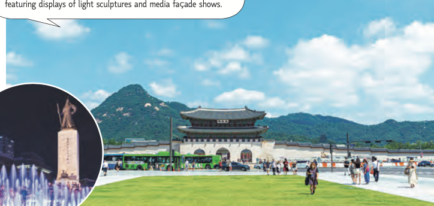
Gwanghwamun
Sitting in front of Gwanghwamun Gate, the main gate of
Gyeongbokgung Palace, major political and administrative offices
were situated in the area during the Joseon era. However, today
it has been transformed into a cultural hub for both locals and
tourists. The plaza features statues honoring 2 of Korea's most
iconic figures, King Sejong the Great and Admiral Yi Sun-sin.
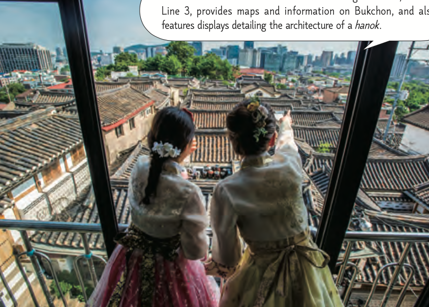
Bukchon Hanok Village
This was the residential area for royalty and high-ranking
officials during the Joseon Dynasty. It is a quintessential
enclave in Seoul characterized by elegant hanok (traditional
Korean houses). Visitors can try on hanbok (traditional Korean
clothing) and partake in various traditional activities. Many
hanoks were renovated into cafés, restaurants, and
guesthouses.
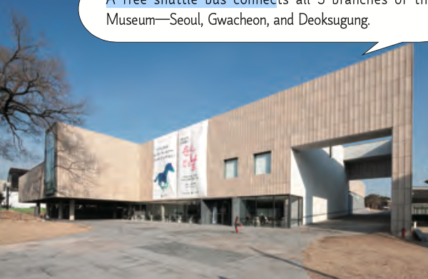
National Museum of Modern
and Contemporary Art, Seoul
and Contemporary Art, Seoul
This is the 3rd branch of the National Museum of Modern and
Contemporary Art opened in 2013. It uses Korea's traditional
architectural concept of "madang," a spacious courtyard, and
the building stands in harmony with the surrounding landscape.
It features diverse exhibitions that showcase current trends
in modern art, and also houses various facilities, such as a
digital archive, seminar rooms, a café and more.
Samcheong-dong
Located between Gyeongbokgung Palace and Bukchon Hanok Village,
this neighborhood blends antique hanoks with chic contemporary
buildings. The area is filled with cozy cafés and restaurants,
and a collection of museums and galleries.
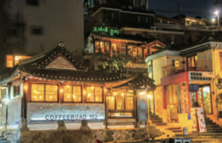
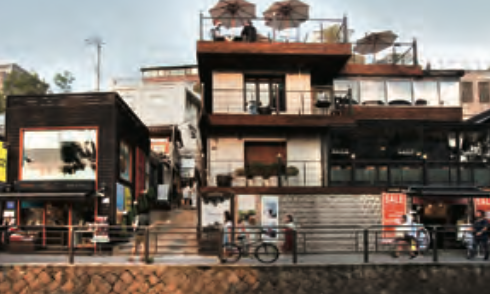
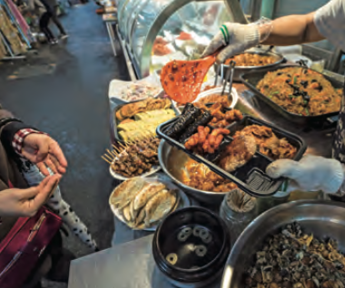
Seochon Village
This village of the Joseon era was mainly occupied by
interpreters and medical officers. Meaning “West Village,”
Seochon was named so for being located west of Gyeongbokgung
Palace. It boasts a cozy mixture of traditional shops and
houses, and modern buildings. Many gift shops, cafés, and
restaurants in the village have gained social media fame.
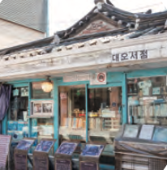
Tongin Market
At this traditional market, visitors can buy old coins of the
Joseon era called "yeopjeon." These coins can be used to buy
various foods and snacks. Oil tteokbokki is the most popular
dish at Tongin Market available in 2 variations: spicy gochujang
and savory soy sauce.
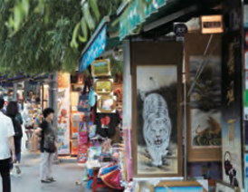
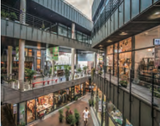
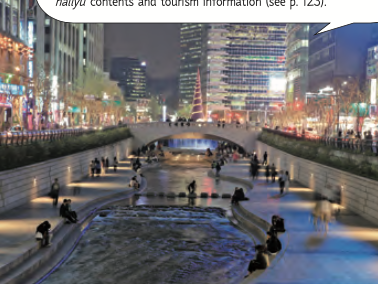
Cheonggyecheon Stream
This stream begins near Gwanghwamun Gate and flows into the
Hangang River. Once considered a slum, the stream was covered
up to build an overpass over it. However, it was revived and
restored to its original state through a city renewal
initiative in 2005. The renewal project created a 20-km scenic
walkway along the stream with plenty of seating and resting
areas. Many events, such as a lantern festival and flea
markets are held at Cheonggye Plaza.
This cultural district is popular among foreign tourists.
Must-see attractions include traditional eateries, antique
shops, Ssamziegil, which is a cluster of quirky workshops, and
Anyoung Insadong, a hub of character shops, galleries, and
hotels.
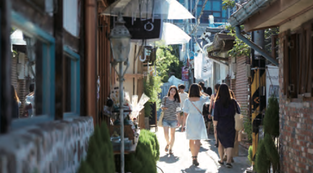
Ikseon-dong Hanok Street
This area is characterized by its narrow alleyways lined with
hanok (traditional Korean houses). It has gained popularity on
social media for the retro ambiance along with hanok cafés,
delicious restaurants, trendy select shops, and more.